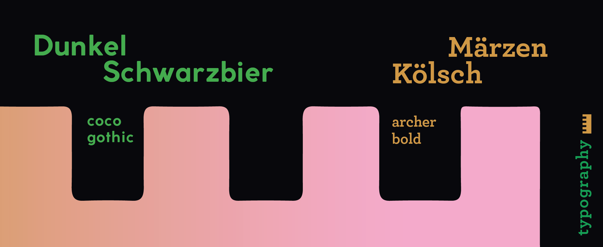
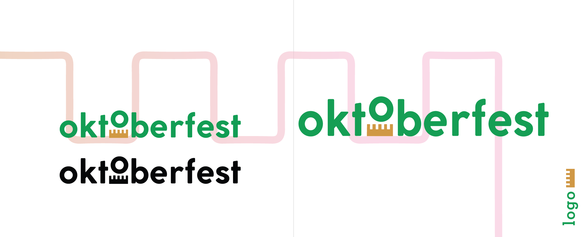
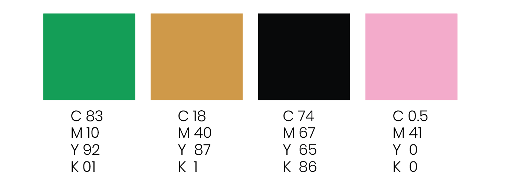
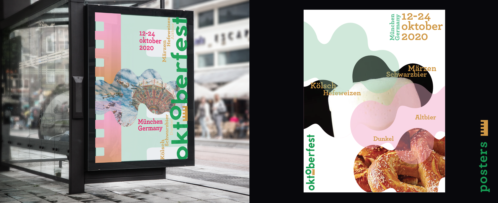
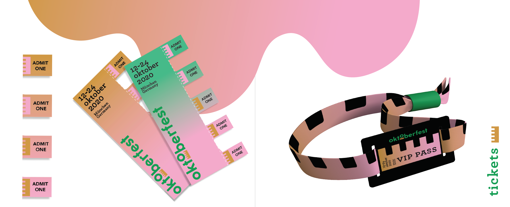
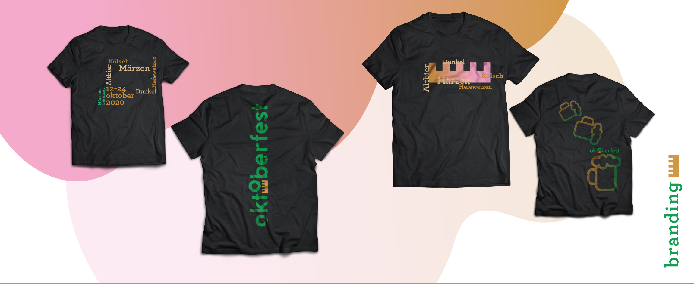

Oktoberfest Festival Branding + Visual Identity
Client: Oktoberfest-Feb-June 2020 My Role: My responsibilities included designing a branding visual identity design and motion design for this event.
Overview
Oktoberfest is a two week festival that is held in Munich,Germany every year celebrating Bavarian culture with loads of beer. The festival consists of various beers, Bavarian music where folks get to dress up in traditonal Bavarian clothing to celebrate.
Problem
The client did not have a clear visual identity system when it came to branding themselves and marketing their events.
Goal
I wanted to have a different spin on the Ttraditional beer festival and bring culture into the identity. Since the original festival was about its culture, I really wanted to embrace that.
Process
I did extensive research digging into how Oktoberfest began, and what it meant to its people.
Sketching + Ideation
I started gathering key terms that related to Oktoberfest and its culture and using that to sketch out potential logos.I started sketching out icons, typography an using the key terms I came up with to inspire the logo.
Mood Board + Color Pallette
Then I gathered images that relate to Oktoberfest, Munich, Germany, and the Bavarian culture. I found patterns from clothing, architecture, and colors that were often represented in the Bavarian clothing.This inspiration lead me to the idea I had for the logo.

Solution
A modern touch to the traditional Oktoberfest with a dash of cultural elements added within the visual identity.
Logo
Oktoberfest is a fun festival, so I wanted to keep it that way. However, I wanted to add the culture to the logo. I added elements from the architecture that being a crenels.I wanted the logo to have character and play with the second "o", so it looked like the crown was uplifting the o, like where the festival originally derives from.
Style Guide
Typography
 Color
Festival Merchandise

